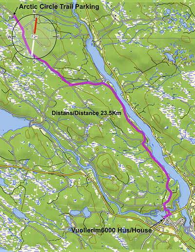

Vägbeskrivning för att ta sig till början av leden:
GPS-koordinaterna vid ledens början är:
N66 34.690 E20 20.974
Leden ligger 23.5 km, omkring 20 min, från Vuollerim.
Så här tar man sig dit:
Från parkering vid Vuollerim6000-huset och Arctic Circle GateWay 97, sväng vänster ut på Murjeksvägen, kör 600 m, sväng till vänster kör 1,1 km, sväng till höger kör 5,8 km, sväng till höger kör 7,2 km, sväng till vänster kör 1,4 km, sväng till höger kör 7,4 km, parkering på vänster sida.

Viktig Information:
Obs: Din kompetensnivå, allmän fysiska förmåga, säsongen och vädret kan alla ha en avsevärd inverkan på din upplevelse. Kontrollera ledens tillgänglighet, väder och andra förhållanden innan du ger dig ut på vandringen. Arctic Circle Gateway 97 hjälper gärna till med uppdaterad information och råd om våra arktiska förhållanden.
- Längd på leden: 12 km med varierande terräng.
- Tidsram: 6 timmar - 2 dagar. Vi föreslår att åtminstone göra en dagstur av det. Det är möjligt att övernatta och njuta av de ljusa nätterna här i norr (då krävs egen övernattningsutrustning).
- Vad behöver jag ha med mig? Vätska (vatten), lämpliga skor och kläder för säsongen beroende på rådande och förväntade väderförhållanden. Kamera och kom ihåg din ledkarta.
- Vad kan vara användbart? En bättre kamera, mobiltelefon, mat, solskydd, solglasögon, myggmedel och/eller skydd, extra och/eller alternativa kläder, toalettpapper, kniv, kompass eller GPS, tändstickor eller tändare, kikare, matlagningsutrustning, eventuell vinterutrustning.
- Vad finns tillgängligt på plats? Vatten, tak över huvudet, huggen ved, öppen spis, yxa, toalett, bär (sommar och höst), svamp (varning se nedan).
- Att tänka på för säkerhets skull: Var medveten om att det Arktiska vädret kan förändras snabbt och dramatiskt. Temperaturer varierar mellan +30 till -40 beroende på säsong. Avstå från att konsumera något du inte är helt säker på t.ex. svamp. Ta ett kort på det i stället. Undvik att dricka stilla, lugn flytande eller varmt vatten. Nöd/Alarm är 112. Ta med en första hjälpen-kit.
- Förordningar, Regler och Lagar: Allemansrätten, jakt, skjutvapen, fiske och andra regler finns. Om du är osäker så njut bara av naturen, ta med dig goda minnen och många bilder hem och lämna inget kvar, annat än dina fotspår……
Du befinner dig i Lapplands Serri naturreservat så tag dig tid att läsa igenom informationstavlorna. Information om naturreservatet finns även tillgänglig på www.lansstyrelsen.se.
Denna App och karta finns tillgänglig tack vare stöd och hjälp från följande företag och organisationer:
aMuze Interactive
Strukturum I Jokkmokk
Länsstyrelsen Norrbotten
Sparbanken Nord
iC Lapland AB
Ljud: Janne och Rigmor Hulth
Samt fotograferna Tomasz Pachlewski, Annelie Päiviö och Michael Scales